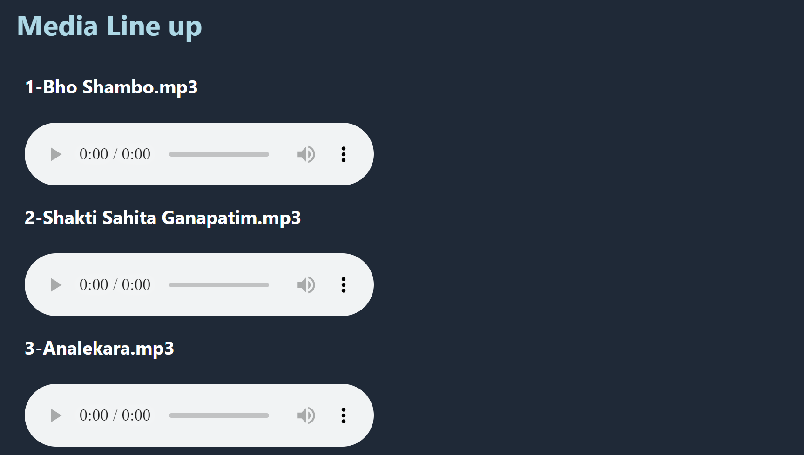
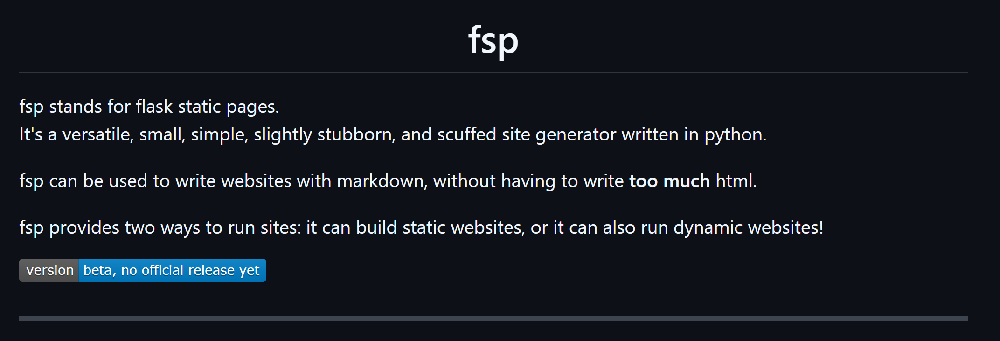
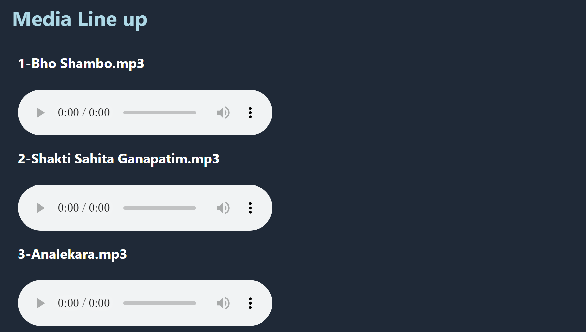
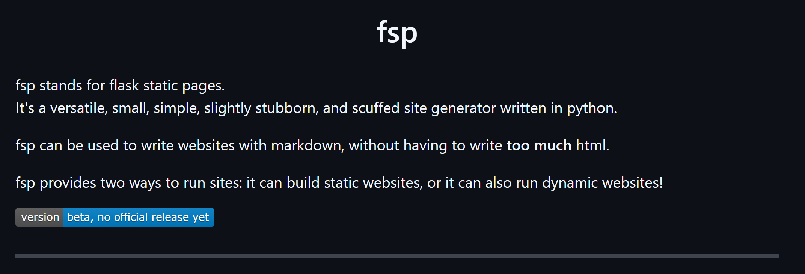

Tejas Bhagawatula's Nightmare Before the Internet
Welcome!
Hi, I'm Tejas.
I'm currently a student in 8th grade who loves technology and data.
Some of my hobbies include:
• Playing my instruments (voice, violin, and viola!),
• Origami,
• Programming,
• Creating Desmos Art,
• Spending hours on end going down spirals of researching various topics on wikipedia only to forget everything that I've learned within the span of approximately 2 days,
• ..and many more!
My dream is to be a professor of astrophysics (specifically dealing with computational high-mass orbital mechanics), while contributing to open source projects and exploring my other passions such as robotics!
Even though my career prospects have changed so much during the past several years I've been on Earth, some things have kept consistent: my passions for space, data, and technology, and my love for being part of a community and helping people.
I'm currently a student in 8th grade who loves technology and data.
Some of my hobbies include:
• Playing my instruments (voice, violin, and viola!),
• Origami,
• Programming,
• Creating Desmos Art,
• Spending hours on end going down spirals of researching various topics on wikipedia only to forget everything that I've learned within the span of approximately 2 days,
• ..and many more!
My dream is to be a professor of astrophysics (specifically dealing with computational high-mass orbital mechanics), while contributing to open source projects and exploring my other passions such as robotics!
Even though my career prospects have changed so much during the past several years I've been on Earth, some things have kept consistent: my passions for space, data, and technology, and my love for being part of a community and helping people.
Projects
fsp
fsp is a site generator written with flask+python which allows you to easily create static or dynamic sites with flexible features.
Learn more on Github
fsp is a site generator written with flask+python which allows you to easily create static or dynamic sites with flexible features.
Learn more on Github
mediaplayer-generator
mediaplayer-generator is a tool made for concert playback systems. It turns a directory of audio files into an interactive web-based playlist app in which you can simply select which songs to play.
Learn more on Github
mediaplayer-generator is a tool made for concert playback systems. It turns a directory of audio files into an interactive web-based playlist app in which you can simply select which songs to play.
Learn more on Github
flask-aht-tickets
flask-aht-tickets is a fully from-scratch and customizable ticketing system made with flask, nginx, and linux. It uses forms to get user input and customizable url routes for different locations. I originally made this for my local hindu temple.
Learn more on the offical website
flask-aht-tickets is a fully from-scratch and customizable ticketing system made with flask, nginx, and linux. It uses forms to get user input and customizable url routes for different locations. I originally made this for my local hindu temple.
Learn more on the offical website
aht-kiosk
aht-kiosk is a toolkit which allows you to automate the task of creating kiosks and slideshows to display in public. Given a directory of images, it will automatically create an html slideshow with all the images, with configuration options. Not only that, but it also syncs up multiple devices running the kiosk, does automatic reloads, and much more using python, powershell, batch, html, and drive.
aht-kiosk is a toolkit which allows you to automate the task of creating kiosks and slideshows to display in public. Given a directory of images, it will automatically create an html slideshow with all the images, with configuration options. Not only that, but it also syncs up multiple devices running the kiosk, does automatic reloads, and much more using python, powershell, batch, html, and drive.
info.aht
info.austinhindutemple.org is an information website for my local hindu temple with an interactive map and information and history on the temple.
Check it out
info.austinhindutemple.org is an information website for my local hindu temple with an interactive map and information and history on the temple.
Check it out
 



Screenshots of selected projects
Contact
You can contact me at [firstname] {at} [lastname] {dot} [gmail] {dot} [com].